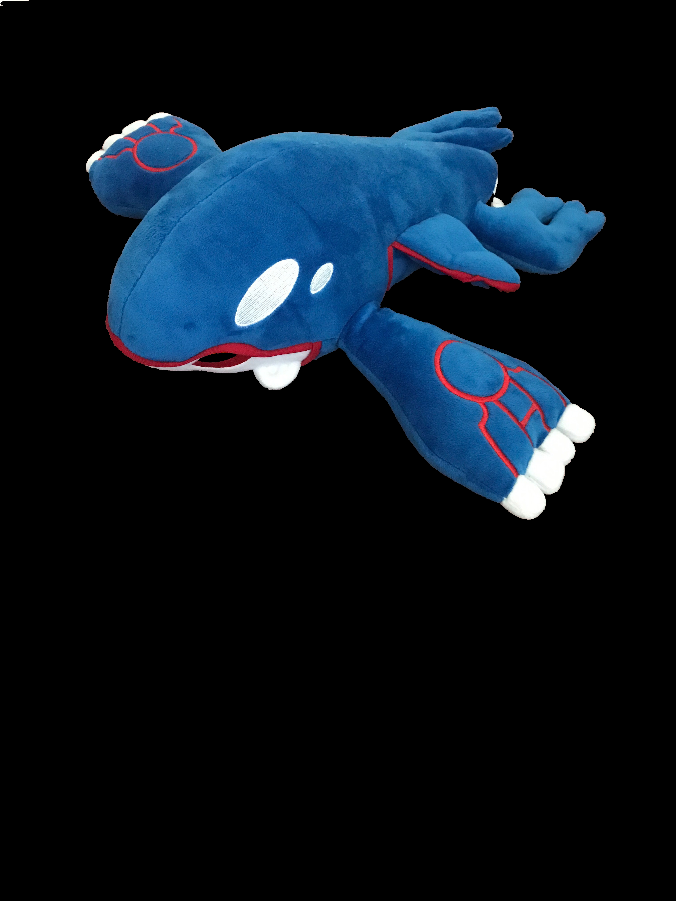

Optimized Foreground Extraction
What it does
This project implements an algorithm that can classify pixels in an image as either the foreground, or the background of the image. The algorithm builds on top of the GrabCut algorithm and is optimized to run on high resolution images. The research behind the GrabCut algorithm can be found here.
We mark the 12-Megapixel source image (left) with foreground seeds (green) and background seeds (red) to guide the algorithm. We are telling the algorithm that the pixels marked in green are guaranteed to be a part of the foreground and that the pixels marked in red are guaranteed to be a part of the background and it is up to the algorithm to figure out the rest. The algorithm outputs a mask (middle) where white pixels indicate foreground pixels and black pixels indicate background pixels. We use the mask to produce the segmented object (right).


Running the GrabCut algorithm on the 12-Megapixel (3024 x 4032) image takes an average of 73 seconds on a 2.7GhZ Quad Core i7 MacBook Pro, the output is shown below. Running the optimized algorithm takes an average of 3.5 seconds on the same machine.

How it works
The algorithm is broken down into two parts, first we obtain a rough outline of the object's contour using the GrabCut algorithm, then we take the rough outline and refine it to produce a sharp contour. Since we are working with high resolution images, we make the task managable by constructing a pyramidal representation of the source image. The pyramid provides representations of the source image at various scales so we can run the GrabCut algorithm on a scaled down (downsampled) version of the image to get fast results, then we upsample the result back into the original resolution. The output of the first step is shown below.

The next step is to refine the contour.